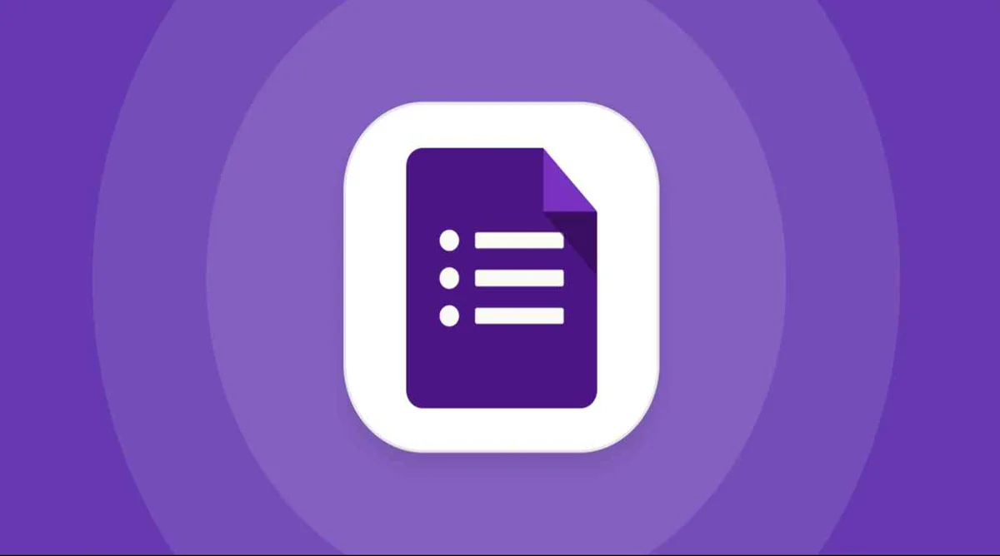

Problema
El proceso actual es totalmente manual. Las solicitudes se realizan en papel, se recogen y son aprobadas manualmente, y los pedidos se envían por correo electrónico. El seguimiento del material se lleva en libros físicos o en hojas de cálculo.
O con más detalle...
Los formularios al ser en papel provoca que a la hora de llevarse a cabe sea más lento, menos eficiente y sobretodo, puede conllevar errores humanos.
A su vez, las revisiones y aprobaciones de las solicitudes, al ser también en papel, puede llegar a generar tardanzas de esas solicitudes, lo que nos podría dar una acumulación de los mismos.
Los pedidos al ser por correo electrónico, provocaría una acumulación de correos y una posible descoordinación
Al llevar el seguimiento en libros fisicos o hojas de cálculo físicas, no proporciona un seguimiento a tiempo real ni te dan la posibilidad de ser colaborativas.
Propuestas de soluciones
Formulario digital
Hacer un formulario digital donde contenga una serie de puntos para evitar confusiones en los datos y tenga un acceso online.
Es decir, sustituir el formulario en papel por uno digital (Por ejemplo, Google Forms), donde contiene un control para evitar cualquier tipo de error en el formulario y a su vez podremos acceder desde cualquier sitio o dispositivo.
Aprobación electrónica
Las aprobaciones se realizan de manera electrónica, así no es necesario tenerlo de manera física.
Seguimiento digital
Hacer una hoja de cálculo digital (Excel) o una Base de datos donde tengamos un seguimiento de los materiales.
Donde podríamos incluir las entradas y salidas (Acciones), incluso el estado de los pedidos, que haría que tengamos un mejor control del seguimiento.
Objetivos del PTD
Eliminar el uso del papel e implementar el uso en digital, para reducir considerablemente el papel, haciendo que sea más rápido (automatización), ordenado y evitamos posibles errores humanos.
Optimizamos las aprobaciones haciendo que sean vía electrónica en lugar de física, lo que nos beneficiaría en el tiempo de espera, en el desarrollo de cada solicitud y sobretodo en el control de dichas aprobaciones.
Permitimos que cualquier profesor o personal tenga la oportunidad de acceder desde cualquier lugar y dispositivo, garantizando un trabajo más eficiente y ágil.
Acciones
En el caso del formulario se sugiere el uso de Google Forms o Microsoft Forms, donde tenga sus respectivos campos como obligatorios, una serie de comprobaciones como el tipo de material a solicitar y su cantidad e incluso para evitar problemas en la elaboración, opciones desplegables.
Para las aprobaciones electrónicas podemos llevar a cabo con el mismo Forms un vínculo con una Hoja de cálculo donde tenga almacenadas las respuestas de cada solicitud.
Dichas solicitudes serán avisadas a sus responables por correo o accediendo a misma hoja, como posible opción tenemos la posibilidad de tener una columna donde se pueda indicar el resultado de cada solicitud.

Para el seguimiento de los materiales tendremos una opción que es el mismo Excel que hemos utilizado en el anterior caso o una base de datos, donde tendremos un registro de todas las solicitudes aprobadas, el estado de los pedidos e incluso el inventario que tendríamos a nuestra disposición
Temporalización, Recursos necesarios y Responsables
Todo es recomendable y aconsejable que se lleve a cabo cuando se tenga completamente preparado tanto los recursos como los responables, no hay una fecha fija, pero cuanto antes se realice, antes se tendrán los resultados.
En cuanto a los recursos digitales, necesitaremos la disponibilidad de un Microsoft Access si se requiere el uso de aplicaciones más elaboradas como Microsoft Forms, Excel o de la base de datos, aunque estas tienen sus alternativas de Google.
Y de recursos humanos se requiere del personal que se indicará a continuación:
| Acción | Responable principal |
| Creación y Gestión del formulario digital | Coordinador o Personal Administrativo |
| Revisión y Aprobación de solicitudes | Dirección o Secretaría |
| Seguimiento del material | Personal administrativo de las compras |
Medidas de seguimiento y Evaluación
Para comprobar que la implementación de esta digitalización ha cumplido o incluso superado los objetivos que han sido indicados, se pueden realizar una serie de medidas:
La medida más aconsejable y clave sería una comparativa (Antes y Después) de la implementación, por ejemplo el tiempo entre solicitudes (envíos y respuestas). O estadísticas, como los errores que surgían antes y los actuales.
También está la posibilidad de ver las opiniones de los profesores o docentes mediante encuestas, ya sean mensuales, trimestrales o anuales, aunque este último no es recomendable por el tiempo de reacción.
Y la última medida pero igual de importante, un cíclo de comprobaciones al igual que las encuestas, aunque en este caso es más aconsejable que sean semanalmente o incluso en algún momento diariamente.